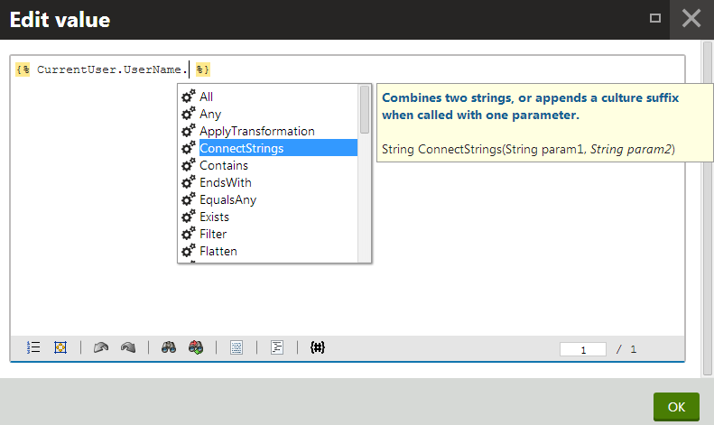

Registering custom macro methods
In addition to the default macro methods, you can also create your own methods. Users can then run custom functionality by calling the methods inside macro expressions.
Use the following process to add macro methods into the system:
Define the methods inside a container class
Register your macro method container for a certain object type or macro namespace
Defining macro methods
Open your project in Visual Studio.
Create a new class. In web site projects, you can either add the class into the App_Code folder or as part of a custom assembly.
Edit the class and add a reference to the CMS.MacroEngine namespace:
usingCMS.MacroEngine;Make the class inherit from MacroMethodContainer:
/// <summary>/// Sample MacroMethodContainer class./// </summary>publicclassCustomMacroMethods : MacroMethodContainer{}Define your methods inside the container class. Macro methods must always have the following signature:
publicstaticobjectMyMethod(EvaluationContext context,paramsobject[] parameters)The EvaluationContext parameter allows you to get information about the context in which the macro containing the method was resolved. For example, you can check the identity of the user in the macro signature (for security purposes) or the values of macro parameters, such as the culture or case sensitivity of string comparisons.
The parameters array stores the method's parameters. When the system resolves the method, the values of the arguments pass into the array. You need to define individual parameters via attributes (see below).
Note
We strongly recommend that you ensure the following in the code of your methods:
Caching – if you load data in the method's code, use the Kentico caching API to optimize the performance
Security – you need to handle permissions and other security checks manually in the method's code to avoid security vulnerabilities. To build security conditions, get the UserInfo object representing the user who entered the macro from the User property of the method's EvaluationContext parameter.
Add the MacroMethod attribute above the method declaration. Specify the following parameters for the attribute:
Type – the return type of the method.
Comment – comment displayed for the method in the macro autocomplete help.
Minimum parameters – the minimum number of parameters that must be specified when calling the method (minimum overload).
Add a MacroMethodParam attribute for each of the method's parameters. For every parameter, you must specify:
Index number (sets the index of the parameter in the params array)
Name
Data type
Comment (appears in the macro autocomplete)
ExampleusingCMS.MacroEngine;usingCMS.Helpers;publicclassCustomMacroMethods : MacroMethodContainer{[MacroMethod(typeof(string),"Combines two strings, or appends a culture suffix when called with one parameter.", 1)][MacroMethodParam(0,"param1",typeof(string),"First part of the string.")][MacroMethodParam(1,"param2",typeof(string),"Second part of the string (optional).")]publicstaticobjectConnectStrings(EvaluationContext context,paramsobject[] parameters){// Branches according to the number of the method's parametersswitch(parameters.Length){case1:// Overload with one parameterreturnValidationHelper.GetString(parameters[0],"") +" - Resolved in culture: "+ context.Culture;case2:// Overload with two parametersreturnValidationHelper.GetString(parameters[0],"") +" - "+ ValidationHelper.GetString(parameters[1],"");default:// No other overloads are supportedthrownewNotSupportedException();}}}
Registering macro method containers
After you prepare your macro methods in a container class, register the container by extending an object type or macro namespace.
Edit the class containing your macro method container.
Add a RegisterExtension assembly attribute above the class declaration for each type that you wish to extend (requires a reference to the CMS namespace).
Specify the type parameters for the RegisterExtension attribute in the following format:
[assembly: RegisterExtension(typeof(<macro method container class>), typeof(<extended type>))]
You can extend the following types:
General system types (string, int, ...)
Kentico API object types (UserInfo, TreeNode, ...)
Macro namespaces (SystemNamespace, StringNamespace, MathNamespace, ...)
Custom types
using CMS;using CMS.MacroEngine;using CMS.Helpers;// Makes all methods in the 'CustomMacroMethods' container class available for string objects[assembly: RegisterExtension(typeof(CustomMacroMethods), typeof(string))]// Registers methods from the 'CustomMacroMethods' container into the "String" macro namespace[assembly: RegisterExtension(typeof(CustomMacroMethods), typeof(StringNamespace))]public class CustomMacroMethods : MacroMethodContainer{...Important: If your macro method container class is defined within a custom assembly, the assembly project must contain the [assembly: AssemblyDiscoverable] attribute (the recommended location is in the Properties/AssemblyInfo.cs file). To use the attribute, your assembly's project must contain a reference to the CMS.Core.dll library.
Result - Calling custom methods in macros
Once you have your custom macro methods implemented and registered, you can call them in macro expressions.
Open any macro code editor in the administration interface. The autocomplete help offers the new methods for the extended types or namespaces.

Custom macro method appearing in the autocomplete of a string property
For example:
Append the method to a macro object of the data type that you extended (string in the sample code):
{% CurrentUser.UserName.ConnectStrings() %}The recommended K# syntax is to use infix notation for the first parameter of methods. You can call the method in the following forms:
{% "String1".ConnectStrings("String2") %} - recommended and supported by the autocomplete help
{% ConnectStrings("String1", "String2") %}
OREnter the extended macro namespace, and then call the method:
{% String.ConnectStrings("First part", "Second part") %}
Macro method code samples
The Kentico installation includes code examples of custom macro method registration, which you can add directly to your web project. To access the samples:
Open your Kentico installation directory (by default C:\Program Files\Kentico\<version>).
Expand the CodeSamples\CustomizationSamples\ sub-directory.
Copy the Macros and Modules folders into the CMS\App_Code folder of your web project.
Web application installations
If your project was installed in the web application format, copy the folders into the Old_App_Code folder instead.
You must also manually include the sample class files into the project:
Open your application in Visual Studio.
Expand the CMSApp project in the Solution Explorer.
Click Show all files at the top of the Solution Explorer.
Expand the Old_App_Code folder, right-click the new sub-folders and select Include in Project.
You can find the macro method examples in the following classes:
Macros/CustomMacroMethods.cs – class containing the sample macro methods.
Modules/SampleMacroModule.cs – initializes the custom method registration.